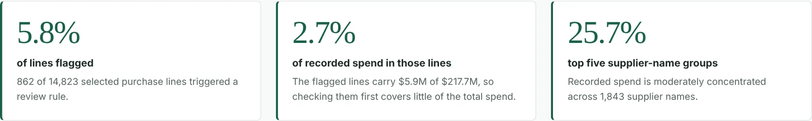
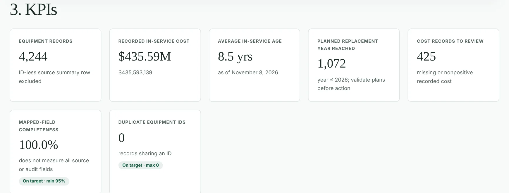
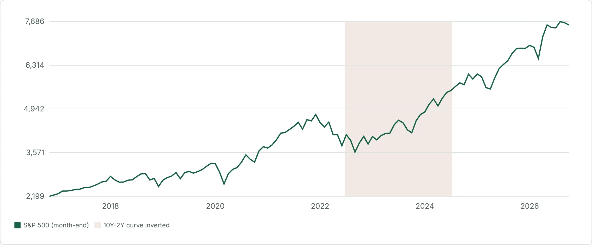
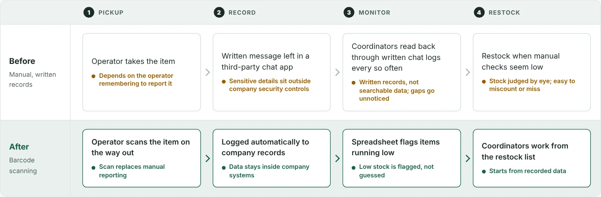

Verified assets across an entire department
Audited the Electrode Consumable Department by tracing company investment histories, investigating record discrepancies, and correcting improperly assigned asset tags.
Data analysis · Reporting · Operations and finance
I’m Ehahn Seok, an economics senior at Michigan State University with a minor in quantitative data analysis, graduating in December 2026. At LG Energy Solution Michigan, I built a barcode inventory reporting system that cut reporting time for bi-weekly inventory checks by about 67%. My independent projects extend that work: a web version of the inventory system, and risk analysis of well-known stocks and ETFs using public data.
Measured results

862 flagged lines carry $5.9M of $217.7M recorded spend, so a first review only has to start with 2.7% of the money.
Read the case study →34%Seattle equipment records flagged for reviewIndependent project · Real public data · JavaScript
1,453 of 4,244 records triggered a rule, including 425 with missing or nonpositive recorded cost.
Read the case study →120months of S&P 500 history tested against yield-curve regimesIndependent project · Public FRED data · Python
Rebuilt weekly from four public data series. All inverted-curve months fall in one 2022–2024 stretch, so the result is context, not a trading rule.
Read the research →67%Less reporting time for bi-weekly inventory checksInternship · LG Energy Solution · Excel / VBA
Barcode check-in and checkout workflows replaced manual consolidation across three supply rooms.
Seattle and California figures come from public government records, retrieved and documented in each case study. LG figures are from my internship; company files are confidential.
01 / Manufacturing experience
LG Energy Solution Michigan
Electrode Production Management Intern · May–August 2026
Presented to company directors as part of the internship competition.
Audited the Electrode Consumable Department by tracing company investment histories, investigating record discrepancies, and correcting improperly assigned asset tags.
Built Excel/VBA barcode check-in and checkout workflows. Consolidated shared-drive CSV logs into a master workbook, with pack-to-piece conversions, duplicate-import prevention, and monthly transaction archives. Reporting time for bi-weekly inventory checks fell by approximately 67%.
Created reports on monthly checkout spending, item usage, low stock, and reorder needs by location, so reviewers could see supply-room activity in one format.
How checkout changed
The same four stages, before and after the barcode system.
Operator takes the item
Depends on the operator remembering to report itWritten message left in a third-party chat app
Sensitive details sit outside company security controlsCoordinators read back through written chat logs every so often
Written records, not searchable data; gaps go unnoticedRestock when manual checks seem low
Stock judged by eye; easy to miscount or missOperator scans the item on the way out
Scan replaces manual reportingLogged automatically to company records
Data stays inside company systemsSpreadsheet flags items running low
Low stock is flagged, not guessedCoordinators work from the restock list
Starts from recorded data02 / Selected projects
Improves on an Excel/VBA tool from my internship · all demo data is synthetic.
Supply Room Inventory System
A browser-based supply-room system that improves on the Excel/VBA tool I built during my internship. Reorder points now come from measured usage, flagged items get a suggested order quantity and days of supply, and all rooms update live in one place.
Records each scan, updates counts and reorder points, and reports inventory value, usage and low-stock items. The demo lets you scan or simulate a checkout and see the dashboard change.
View the full time series in the project.
Completed months only · price index, excluding dividends
Equity Risk and Regimes
Extends my S&P 500 regime study to ten stocks and ETFs, including two banks. Compares return against risk, drawdowns and correlations, tests performance after yield-curve and inflation regimes, and includes a portfolio builder.
The S&P 500 gained an average of 20.2% over the following year after inverted yield-curve months, compared with 12.0% after normal yield-curve months.
Real federal records · combines my earlier Seattle and California work.
Arizona Public Spending
Combines the asset-review and purchasing-controls approaches from my earlier Seattle and California projects into one analysis of Arizona contract spending. It reports agency, industry and vendor concentration, and lists awards that need closeout or record correction.
Show where public contract dollars concentrate in Arizona, including semiconductor and manufacturing work, and surface awards whose records need follow-up.
| Work | Aim | What I did | Result |
|---|---|---|---|
| LG inventory system | Speed up inventory reporting for bi-weekly checks. | Built Excel/VBA barcode workflows and consolidated CSV logs into one master workbook. | Reporting time for bi-weekly checks fell about 67%; 300+ items tracked. |
| Inventory system (web) | Drive counts and reorder alerts directly from scan logs. | Rebuilt it as a browser app with usage-based reorder points, suggested orders, live KPIs and CSV import/export. | Working demo on synthetic data; 3 rooms, 48 items. |
| Arizona public spending | Review Arizona contract awards for concentration and follow-up items. | Built a weekly pipeline on USAspending.gov data with agency, industry and vendor concentration measures and review lists. | Runs on real federal awards; refreshed weekly. |
| Equity risk and regimes | Measure stock performance across yield-curve and inflation regimes. | Built a weekly pipeline for ten stocks and ETFs plus FRED macro series; added risk metrics, drawdowns, correlations and a portfolio builder. | S&P 500 gained 20.2% on average after inverted-curve months vs 12.0% after normal months; few independent episodes. |
03 / Methods & tools
Inventory reconciliation, asset verification, cost comparisons, scenario modeling, and KPI reporting.
See the financial tradeoffs →Excel/VBA, SQL familiarity, Python, CSV consolidation, validation, and automated reporting.
R (tidyverse, ggplot2), Stata, regression, hypothesis testing, and data visualization.
See the economic analysis →Ames housing: Compared regression specifications using living area, lot size, garage capacity, and variable transformations.
Corporate hotel spending: Examined differences by corporate customer, room type, and weekday.
ACS commuting: Reshaped state-level estimates and visualized driving-versus-transit commute-time gaps.
These coursework projects involved cleaning and restructuring large datasets in R and Stata.
Languages: English (native), Korean (fluent), Japanese (fluent).
04 / Contact
Open to data analyst, business analyst, financial analyst, and operations analyst roles starting in 2027.